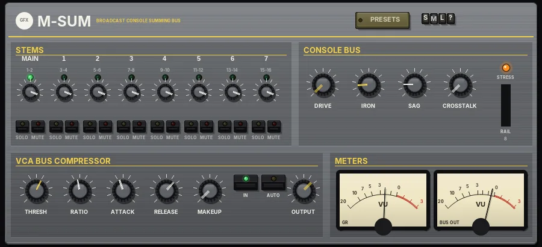

M-Sum
An analogue broadcast-console summing bus with transformer iron and a fast VCA bus compressor.

Overview
M-Sum sums your stems the way an 80s British broadcast console's mix bus does. Up to eight stereo inputs - the bus track's own audio plus seven stems - are added together through the desk's bus physics, then pass through its output transformer and its fast VCA bus compressor.
The special part is the bus itself. The more energy you put on it, the further the virtual power rail sags (down to 65% at most), which acts as a soft, natural bus compression that responds to the whole mix rather than to any one stem. The transformer saturates only the lows below about 150 Hz, mostly with 3rd harmonic, and adds a small resonance at 35 Hz; the mids and highs pass through untouched.
Turned down, it is a clean summing mixer with solo and mute per stem. Pushed with DRIVE, IRON and SAG, it thickens, glues and bends like a desk running hot.
Reach for it for
- Summing stems or groups through one console-style bus
- Gluing a mix with a fast VCA bus compressor
- Adding low-end weight and iron without dulling the top
- Making a mix feel denser and more 'run through a desk' (SAG, DRIVE)
- Quick stem balancing with solo and mute in one place
Setting up the routing in REAPER
- Create a mix bus track and put M-Sum on it. Open the track's ROUTE window and set Track channels to 16.
- On each stem track, add a send to the bus track. In the send's audio routing, pick a different destination channel pair for each stem: STEM 1 on 3/4, STEM 2 on 5/6, STEM 3 on 7/8, STEM 4 on 9/10, STEM 5 on 11/12, STEM 6 on 13/14, STEM 7 on 15/16.
- Turn off the master send on every stem track, so the stems are heard only through M-Sum (otherwise you hear them twice).
- Channels 1/2 are the MAIN input: whatever plays on the bus track itself (or is sent to it on 1/2). Use it for an eighth stem, or leave it empty.
- The summed mix leaves on channels 1/2, so leave the bus track's master send on. The green light above each input lights when signal arrives on it.
Controls
STEMS
Eight input strips: MAIN (channels 1-2) and stems 1 to 7 (channels 3-4 up to 15-16). The channel pair is printed under each number.
- Signal light
- The green light glows when audio arrives on that input and the input is being heard (not muted or left out by a solo).
- Level knob
- The input's level, from OFF (fully left, -60 dB) to +6 dB; 0 dB by default.
- SOLO
- Solo in place. Any number of inputs can be soloed at once; while anything is soloed, only the soloed inputs are heard.
- MUTE
- Silences the input. A muted input stays muted even when it is soloed.
CONSOLE BUS
- DRIVE (yellow cap)
- The level into the bus and the transformer, 0 to 24 dB. More DRIVE pushes the iron and the rail sag harder; it also raises the level, so bring OUTPUT down to compensate.
- IRON (yellow cap)
- How hard the output transformer's core works, 0 to 100 (15 by default). Only the lows below about 150 Hz are saturated, mostly with 3rd harmonic, for weight and density in the bottom end while the top stays clean.
- SAG
- How much the power rail sags under load, 0 to 0.30 (0.05 by default). The more energy on the bus, the lower the rail - a soft, programme-dependent squeeze. It reacts quickly (2 ms) and recovers in about 60 ms, so it feels like bus compression rather than distortion.
- CROSSTALK
- The left and right buses bleeding into each other, as on a real desk. Fully left is OFF; turn it up (to 0 dB) to narrow and glue the stereo image slightly.
- STRESS
- The orange light glows when the rail starts to sag.
- RAIL
- The bar and number show the rail voltage, from 100 (no sag) down to 65 (maximum sag). It turns orange when the rail drops below 90.
VCA BUS COMPRESSOR
A fast feed-forward compressor after the transformer. It reads the peaks of both sides and applies the same gain to both, so the image stays put.
- THRESH (yellow cap)
- The level where compression starts, -30 to 0 dB (-12 dB by default).
- RATIO
- 1:1 to 20:1 (4:1 by default). 2:1 for gentle glue, 4:1 and up for obvious control.
- ATTACK
- 0.1 to 20 ms (1 ms by default). Short times catch the transients; longer times let the punch through before it clamps down.
- RELEASE
- 10 to 600 ms (150 ms by default). It is programme dependent: the longer the compressor keeps working (more than about 2 dB of reduction), the slower it releases, up to four times the set value, so sustained passages don't pump.
- MAKEUP
- Manual make-up gain, 0 to 18 dB. When AUTO is on, the knob reads AUTO and has no effect.
- IN
- Switches the compressor in or out (in by default).
- AUTO
- Automatic make-up: adds back half the reduction a full-scale peak would get, so the level stays roughly steady as you change THRESH and RATIO.
- OUTPUT (yellow cap)
- The final level of the bus, -24 to +12 dB. It works whether the compressor is in or out.
METERS
- GR
- VU meter showing the compressor's gain reduction.
- BUS OUT
- VU meter showing the output level of the bus.
The header
- PRESETS
- Opens the list of factory presets. Choosing one sets the plugin's controls for that job; the input and output stages are left as they are. The last entry resets everything to the defaults.
- S / M / L
- Panel size: small, medium or large. The panel also scales to fit the plugin window.
- ?
- Opens a pop-up with the design credit, the GFX website address and the address of this manual. Click anywhere to close it.
- OUTPUT
- Folds the input and output stages out below the panel (and back in). The light shows when they are open.
Output stage (OUTPUT fold-out)
- SAT
- Band saturation on the way out: only the lows and highs are saturated (the mids stay clean), with a soft curve that loosens as the level rises.
- BIAS
- Shapes the saturation: more bias adds more even (2nd) harmonics, for a warmer, rounder colour.
- LO BAND / HI BAND
- Where the low and high saturation bands start (40 - 400 Hz and 2 - 16 kHz).
- CEILING / THRESH
- With CLIP: the level the peaks are softly clipped at. With LIMIT: the threshold of a brickwall limiter that holds the peaks at -0.3 dBFS - pulling it down limits harder and makes the output louder.
- OFF / CLIP / LIMIT
- The final stage: nothing, a soft clipper (no latency), or a lookahead limiter (3 ms latency, compensated by REAPER).
Presets
- Clean Sum
- A light touch of iron and sag, compressor out.
- Warm Console
- A little drive and iron with gentle 2:1 bus compression.
- Driven Desk
- 8 dB of drive, more iron, sag and crosstalk, 3:1 compression.
- Broadcast Glue
- 4:1 fast-attack compression with AUTO make-up, for steady broadcast-style glue.
- Heavy Iron
- Full IRON for maximum low-end weight, slow gentle compression.
- Punch Bus
- 6:1 with a very fast attack and release and more sag, for punchy, pumping drums.
- Stressed Rail
- 10 dB of drive, heavy sag and some crosstalk for a squeezed, overdriven desk.
- Straight Sum (no colour)
- No iron, no sag, compressor out: a clean sum.
- Reset all to defaults
- Every control back to its starting value, including stem levels, solos, mutes and the output stage.
Tips
- The presets change only the bus and compressor settings; your stem levels, solos and mutes are left alone (except Reset).
- Watch the RAIL number: a few points of sag on the loud parts is glue, a rail sitting in the 70s is an effect.
- Because DRIVE raises the level, use OUTPUT to match levels before judging whether the colour is better.
- For mix-bus glue, start with RATIO 2:1, a 10 ms attack and the GR meter showing only 1-3 dB on the peaks.
File: gfx-m-sum.jsfx